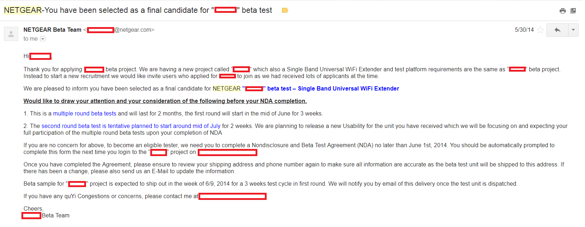

Last modified: Tue May 29 2018 20:02:27 GMT+0800 (Malay Peninsula Standard Time)
The Free Stuff Guy
How I got started
I often go by the name of "The Free Stuff Guy" among my friends. People always ask how I manage to get those free (and expensive) free stuff. Well, I will try my best to break down the mystery. Everything I got was during my college period (2013-2017) in the United States.
It started with one afternoon or weekend where I started to search for some websites to sign myself up for some alpha or beta testing. There are quite a few sites or companies that handles these. I am not going to discuss the websites that I used as here as if you do not have some background about technology as it is just waste of both you and their time. Well, as what you expect, you have to build your reputation up. I signed up some program, not all, that I was interested, wrote and described about myself. There will not be any indication what the product is as they are prototype, but you can expect the product to launch in the next 1 month - 6 months period.
I usually talked about my previous mobile experience or computer network experience. Depending on the study group that they are looking for, sometimes they may look for beginner instead of expert in the field for the products. Even if you are not chosen for the specific project, you will still receive a follow up email. If you are chosen, you will receive an email to sign the NDA (Non-disclosure Agreement) with the company. The agreement states everything that you should and should not do as well as information that you can and cannot give out to the public.
I started receiving some small stuff: Google Cardboard liked item (remember, it was 2014, 360 video was not even a thing yet!), etc. I did not complain. Instead, I was having all sort of fun. And more and more things. The only responsible that I had to do for my beta test was to test out the DUT (Device Under Test) and report any issues. Everything that the beta group discuss are always internal.
Netgear Beta Testing
I believed I only signed up for Netgear beta test once and I got selected for the very first time. I attached a screenshot about me being selected as the final candidate for the project.
This is how an email looks like when you are selected for beta test. They are very generic and very similar to one another.

From the email, you will get some extra information about the item you are expecting to receive and the product category. Netgear usually don't have a lot of beta test unless they are introducing a new product line. Wireless extender or repeater tend to be huge in 2014. They introduced a small, portable, and light weight.
I received two different Netgear Extender, same hardware with different firmware, during the testing period. The first one was lack of user friendliness but the second one came with a GUI (Graphic User Interface) that allow your mom at home to set it up easily.
About one year later, I received an email from Netgear to ask the user to fill out a survey.
From the email, the product was very interesting and I was very interested in participating. I applied. Then, I was selected. It took two weeks for them to decide. Well, part of it was due to my previous beta test performance with them.
The beta test was a very small and focused group. The criteria was very narrowed down. I had an unplanned trip. I emailed the person in charged and talked to her about my trip and tried to obtained more information about the product to see if I am allowed to received the product earlier. She tried to arrange it and the product development was delayed so I could not participate into the very early product testing.
6 months later (June 2016), the same person sent me an follow up email asking if I was interested and available to test the exact same product. I turned her down again as I had a planned trip during the entire test schedule (Summer 2016). I kindly told her my situation and asked to keep me in the mailing list if anything happens. 2 months later (August 2016), she contacted me once again and asked for my participation. I accepted her offer this time. What I learnt here was if someone is interested in working with you, no matter how many times you have rejected due to your schedule, eventually it will workout.
A few emails back and forth later, I received the package.
It was mailed on Fedex International Priority (2 Day) from Taiwan to the place I stay in the USA. I received it at the very end of August 2016. It was heavy, huge, but well packaged.
I did expect how the item look like as there are rumours around the internet how this item look like. Netgear did try their best to try to get the hype started as they were the first one who introduced this to the market. My Orbi came with a set of 3 which I did not expect. Iwas expecting a set of 2 since that was the rumors on the Internet. This was probably the most expensive things I received as a prototype or sample. It costs $700 when it rolled out on December 2016.
This item has been sitting in my hometown, Penang since January 2017. It is still running as my primary router for our parents' business today. And I still highly recommend this to anyone that need large coverage. Find out more about the product here.
PS. I am not paid to advertise.
When I was back in Malaysia on Summer 2017, I found out that people in Malaysia and Singapore had trouble setting up Orbi as router mode. People were complaining how much they paid and it did not work for them. I quickly left a comment and approached the group to offer help. One person contacted me and I wrote a step by step tutorial on how I managed to get mine to work. Well, if you understood a product completely inside out, there will be no issue on getting it to work if there is no limitation (except limitation of knowledge).
Orbi Voice Enabled Extender
On May 2018, I received an email from the same lady that handles the project. This time, she was inviting me to participate in the new beta test with the same product category.
I had a few email back and forth with her and realized that the product feature does not work in the country where I am in now, Malaysia. We had a few emails back and forth and she will keep me in mind for future projects and congratulates me and wished me all the best for moving to Malaysia. Well, I was pretty disappointed as the free stuff does not work outside United States.
ZTE Smartphones Beta Testing
I believed more people are interested in how I managed to get free smartphones, partially paid trip, and network with the company compared to the topic just discussed above. Well, it started the same: application, application, application, build reputation, etc... Smartphone beta test was a little bit tricky than others. Everyone uses smartphone and there was challenges that you need to go through in order to get filtered and be part of the list. Sometimes, they are looking for a beginner user and expert sometimes. You won't be able to get more information. I think I got accepted on the first application (too).
There is not much information with the device that I was expecting to receive. Usually, it will be a midrange or low end devices as they were cheap to make. There won't be a lot of flagship opportunities. Unfortunately, I did not have any pictures about this beta test. I had to return the device after the beta test ended. It was relatively short period, mainly to test the carrier network.
First Device
In the Nov 2015, I received an email asking me if I would like to go in their office for a closed study group. I replied and got accepted. I went in person and was asked to operate a smartphone, used the application that they designed, and gave comments. In the same month, I also received an email to asked if I could attend the Thanksgiving Dinner and special events at Chicago. I did not able to attend due to my schedule.
On April 2016, I received an email. I believed it was targeted to specific group of users who participated in their beta test before.
I got excited when I read the word "Premium". Yup, I got accepted easily with my previous experience and beta test with them. And I received a package not long later, shipped with Fedex 2 Day Express.
I received the left phone shown in the picture. It was premium as expected. It was their flagship that they were going to release in the two months. As usual, there were a lot of discussion internally among all beta testers. A month later, I sent an email to the person in charged to tell him that I was planning to leave the country for vacation. The whole purpose was to asked if I was allowed to bring the phone for the entire trip while I was away for almost three months. He gave me a label and I returned the device to them. He was pretty disappointed as I was the top contributor to the beta test for this device (told via e-mail).
After I returned from my trip, I emailed him to asked if I can purchase the device that I tested as I found out that the device that they released has the capacitive key instead of the on screen key. The person (high up in the company) in charged told me there are two options: he could not sell the device (pre-production) that I tested as there is no warranty, he can give the device to me at no cost; he could generate a coupon code to give me discount if I was interested in purchasing new device with warranty. Well, you should know which option I picked: free, as I am interested with the one that has on screen key.
This is the free phone I received. I will not recommend this phone to anyone that is looking for a smartphone with good camera. This device has one of the worse camera among all the smartphones I owned. However, the screen is brilliant (the screen of the prototype was made by the manufacturer who made iPhone 7) and speakers are superior! This phone was $400 when it was released. It was meant to be budget flagship.
The next smartphone I received from the company was a midrange device meant for carrier at May 2017. Did I love it? Performance wise, no. This is a midrange phone, I did not expect too much from it. The screen quality and battery life on this phone were amazing! I do not have plan to retire this phone yet.
I watched Youtube video and do some basic web surfing on this phone in the 4 days period. Screen on time was 8 hours and I had 7% battery left still. Wasn't it amazing?
I started carrying this phone along with my axon 7. I use this phone for camera mainly. The picture quality is amazing!
ZTE's CES 2018 Guest
I was part of the 21 people who attended CES 2018 event hosted by ZTE. I was supposed to be the group for the event for the research study group too, but they notified me late and I already bought my flight ticket at that time. So, I was with them for a few of their events.
How it got started was there was a contest going on the ZTE Community forum. I did not participate. Instead, I ping their community twitter handle to see if I was allowed to join them as I will be in CES for my own expense. They replied me and gave me a thumbs up for me to join their events that they planned a list of events for their guest. I guest they know who @melvinchng is at Twitter? These are the highlights of the events they planned (there were more going on).
That was me holding the phone I received, along with 20 other guests (Youtubers, contributor, etc). We were also travelled with the party bus that they chartered when we moved around.
We rode on the world largest ferries wheel (as of 2018): High Roller in Las Vegas. We got drink before we rode. It was probably the longest ferries wheel I rode on. One entire roation was 30 minutes long. The highest elevation was 550 ft, I believed.
That was the view of the Las Vegas strip from the ferris wheel.
That was how big the Ferris Wheel was from the inside.

They arranged a formal dinner to dine with many of the company executives, including the Global CEO and North America CEO.
Before the dinner that day, we were put on a helicopter ride too.
The company paid for all these. For those people who won the contest, they also received free hotels stay or/and were paid to fly in. They are more about my trip. But I will stop here to leave it for people who found interesting and wanted to have a chat with me about this.